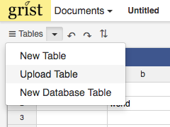

Entering data#
Grist behaves much like other spreadsheet software. You can type into any selected cell. While in type mode you can take several actions:
Escapekey cancels the operation and restores the previous values of the cell.Tabkey saves your entry and moves your cursor to the next cell in the current row.Enterkey saves your entry and moves your cursor to the next cell in the current column.
Cut and pasting#
You can cut and paste data into and out of Grist similar to other spreadsheet programs. If the pasted range is longer than the available records, additional records will be created.
Available in future release
If more columns are pasted than available, a prompt will confirm whether you'd like to create additional columns or to limit paste to the current ones.
Importing data#
There are several ways to import data into Grist.
Upload as a new document#
From the Document List, click Upload Doc and select a file. You can import tab-delimited or
comma-delimited files, as well as xls(x) files. If you're importing a spreadsheet with multiple
tabs, each tab will be imported as a separate table in Grist.
Import into existing document#
From the Tables dropdown menu, select Upload Table and select a file.
